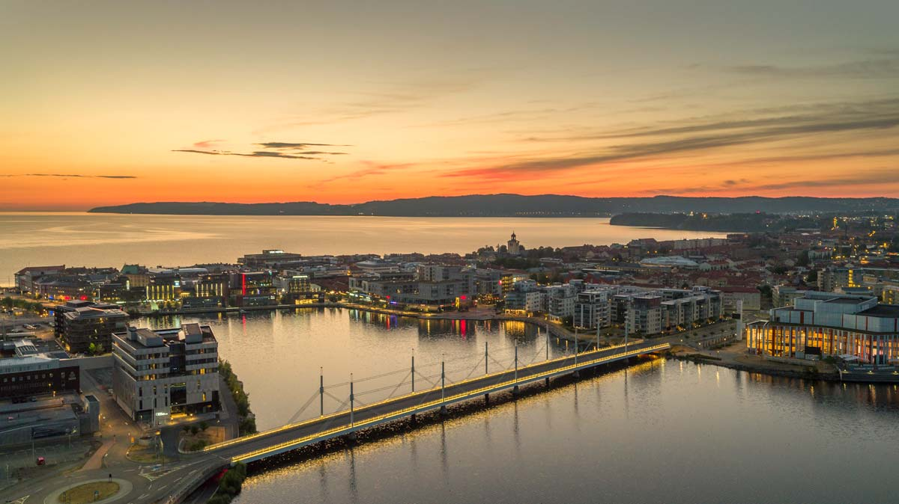

Jönköping is a city on the shores of Lake Vättern, in southern Sweden. It’s known for its long lakeside beach, Vätterstranden.

ENVIRONMENT
The city pulse blends with the harmonious calm of nature. Lake Vättern follows the city’s side loyally and the nature experiences it offers provide an exceptional contrast to the city life just a few metres away on land. Here, there are big chain stores next door to small local talents. The environment around the city and towns consists of forests, lakes and mountains. There are many spectacular places to visit if you want an extraordinary nature experience.
HISTORY & CULTURE
Jönköping is not just a scenic part of Småland – it’s also a place that bears witness to times gone by. For example, Jönköping earned its place on the world map when its early industrial activity created the safety match, and John Bauer’s famous fairy tale character Tuvstarr was reproduced in settings from the region. Wherever you put your foot, you’ll be in a historic environment.
FOOD
Jönköping offers a culinary journey of choices. With restaurants from all the corners of the world, there is wide choice. Delicatessen shops, cafés and farm shops provide a feeling of luxury and times gone by as well as exciting tastes. The interest in food and tastes has increased at an explosive rate in recent years, to which the city bears witness. Here you can experience the taste of Småland, green forests and beautiful views – always close to the city.